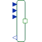
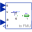
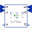

GeneralPositionToForceAdaptorSignal adaptor for a Translational flange with force as output and position, speed and acceleration as input (especially useful for FMUs) |

|
Information
This information is part of the Modelica Standard Library maintained by the Modelica Association.
Adaptor between a flange connector and a signal representation of the flange. This component is used to provide a pure signal interface around a Translational model and export this model in form of an input/output block, especially as FMU (Functional Mock-up Unit). Examples of the usage of this adaptor are provided in Translational.Examples.GenerationOfFMUs. This adaptor has position, velocity and acceleration as input signals and force as output signal.
Note, the input signals must be consistent to each other (v=der(s), a=der(v)).
Parameters (4)
| use_pder |
Value: true Type: Boolean Description: Use input for 1st derivative of potential |
|---|---|
| use_pder2 |
Value: true Type: Boolean Description: Use input for 2nd derivative of potential (only if 1st derivate is used, too) |
| use_fder |
Value: false Type: Boolean Description: Use output for 1st derivative of flow |
| use_fder2 |
Value: false Type: Boolean Description: Use output for 2nd derivative of flow (only if 1st derivate is used, too) |
Connectors (7)
| p |
Type: RealInput Description: Input for potential |
|
|---|---|---|
| pder |
Type: RealInput Description: Optional input for der(potential) |
|
| pder2 |
Type: RealInput Description: Optional input for der2(potential) |
|
| f |
Type: RealOutput Description: Output for flow |
|
| fder |
Type: RealOutput Description: Optional output for der(flow) |
|
| fder2 |
Type: RealOutput Description: Optional output for der2(flow) |
|
| flange |
Type: Flange_b |
Used in Components (3)
|  |
Modelica.Mechanics.Translational.Examples.Utilities
Input/output block of an inverse mass model |
|  |
Modelica.Mechanics.Translational.Examples.Utilities
Input/output block of a spring/damper model |
|
Modelica.Mechanics.Translational.Examples.Utilities
Input/output block of a spring model |